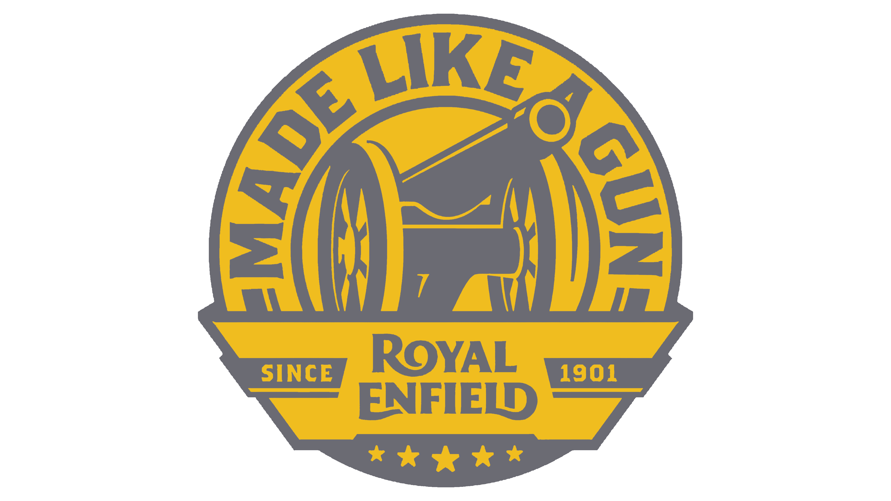
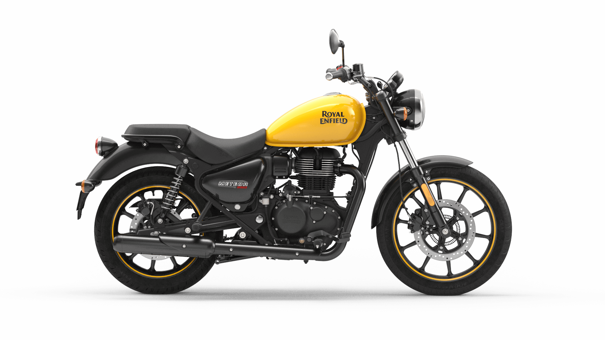
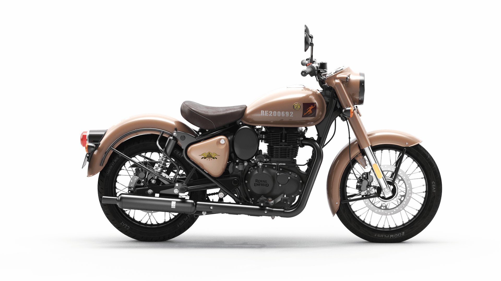
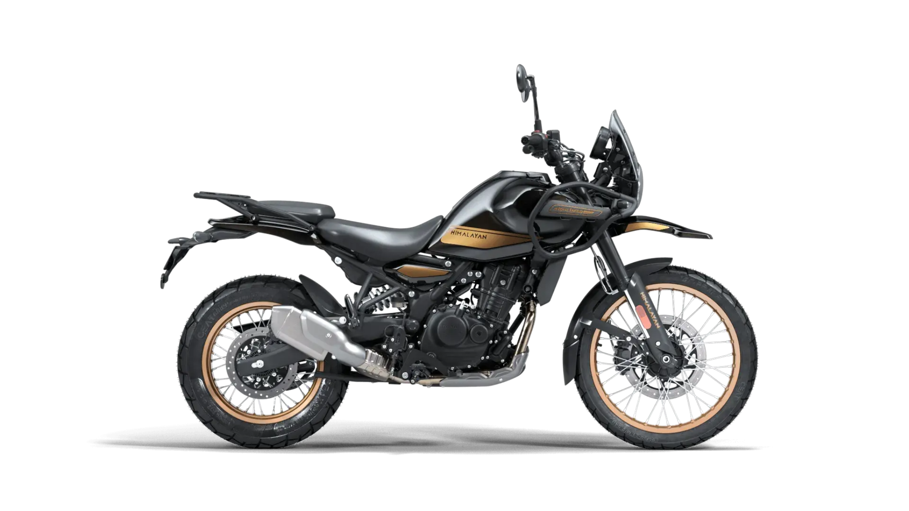
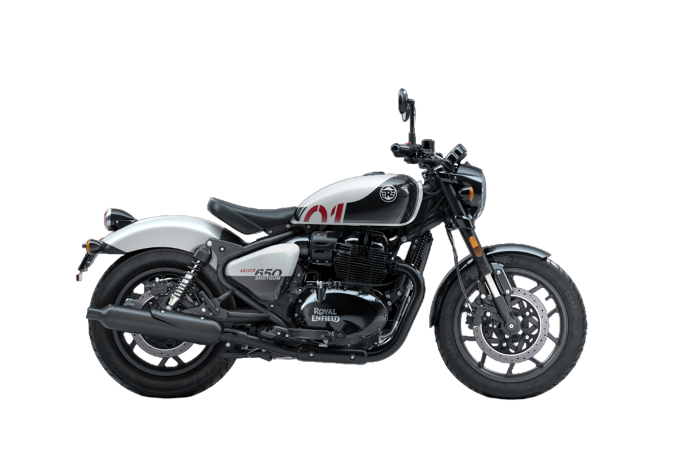
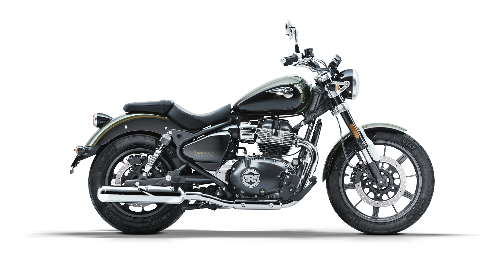
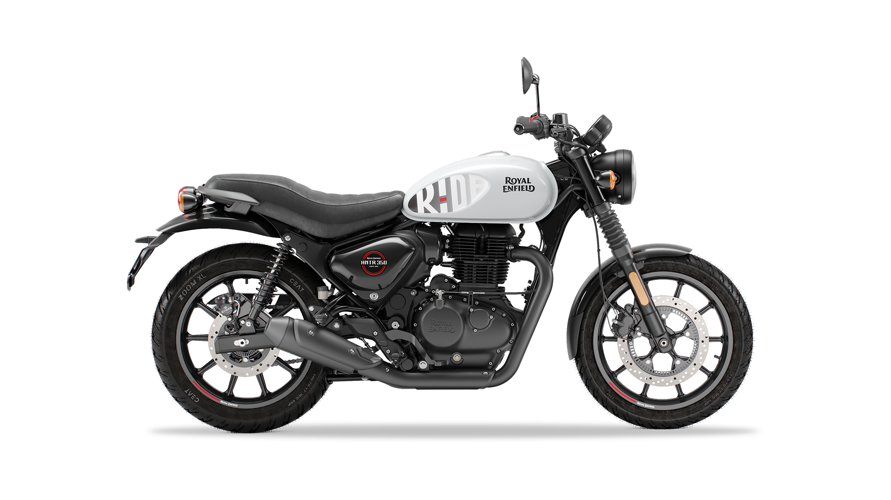

  En el corazón de la Meteor se encuentra el nuevo motor de 349 cc SOHC, refrigerado por aire y aceite, con una característica carrera larga y un sistema de inyección electrónica que produce una potencia suave y manejable y un excelente torque. Continuando con la leyenda de los sencillos, el nuevo motor posee un escape característico de Royal Enfield  La Classic 350 EFI es el significado perfecto de diseño, estilo, comodidad, y resistencia. Faros delanteros con forma de ojo de tigre y luces traseras vintage para un diseño clásico que se suman a su estilo.  Viajar por el Himalayan es una experiencia totalmente imprevisible.
No existía ni una sola máquina diseñada para una aventura así …
 Bajo el inquebrantable espinazo de acero de la Shotgun 650 late nuestro motor bicilíndrico paralelo de 648 cc, diseñado para enfrentarse al mundo real gracias a su sólida respuesta en el rango medio de revoluciones y un par motor sobrado en todas las marchas para que el motorista no deje nunca de divertirse  El motor bicilíndrico paralelo de 648 cc de la Super Meteor 650 es un motor de carrera larga, refrigerado por aire y aceite, con un sistema de inyección electrónica que produce una potencia suave y manejable y un excelente par motor. El motor está diseñado para ofrecer una experiencia de conducción relajada y cómoda, con una respuesta progresiva del acelerador y una entrega de potencia lineal.  El motor de 349 cc de la HNTR 350 es un motor monocilíndrico, refrigerado por aire y aceite, con una carrera larga y un sistema de inyección electrónica que produce una potencia suave y manejable y un excelente torque. El motor está diseñado para ofrecer una experiencia de conducción relajada y cómoda, con una respuesta progresiva del acelerador y una entrega de potencia lineal.Descubre la Leyenda de Royal Enfield
Motos Destacadas
Meteor 350
Classic 350
Himalayan 450
Shotgun 650
Super Meteor 650
HNTR 350
| Meteor 350 | Classic 350 | Himalayan 450 | Shotgun 650 | Super Meteor 650 | HNTR 350 |
|---|---|---|---|---|---|
| Motor monocilíndrico de 349 cc refrigerado por aire, ~20,2 hp y 27 Nm de torque. inyección electrónica, frenos ABS de doble canal. | Motor de 349 cc ofrece 20 hp de potencia y 28 Nm de torque. Con frenos ABS, caja de 5 velocidades y un tanque de 13,5 L | Motor monocilíndrico líquido de 452 cc (Sherpa 450), con ~ 40 HP a 8.000 rpm y ~ 40 Nm de torque a 5.500 rpm. | Motor bicilíndrico paralelo de 648 cc. Produce cerca de 46-47 hp y 52 Nm de torque, caja de 6 velocidades. | Motor bicilíndrico paralelo de 648 cc que entrega unos 47 HP a ~7.250 rpm y unos 52.3 Nm de torque a ~5.650 rpm. con ABS de doble canal. | Motor monocilíndrico de 349 cc con inyección, que produce ~ 20.2 HP @ 6.100 rpm y ~ 27-32 Nm de torque @ 4.000 rpm. con ABS de doble canal. |
¿Tienes dudas o quieres más información? Escríbenos y te ayudaremos a encontrar la Royal Enfield ideal para ti.